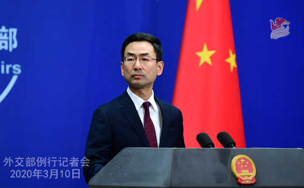

外交部:中国为国际对非合作发挥了重要引领作用

人民网北京3月10日电 据外交部网站消息，外交部发言人耿爽主持例行记者会。记者会实录如下：
一、我向大家通报一组数字：根据中国国家卫生健康委今天上午发布的统计数字，3月9日0-24时，中国境内新增治愈出院病例1297例，截至3月9日24时，中国境内累计治愈出院病例59897例。
二、中国—太平洋岛国卫生专家视频会议于今日举行。
此时此刻，中国外交部、国家卫生健康委员会的官员以及中方的卫生专家，正在与库克群岛、斐济、基里巴斯、密克罗尼西亚联邦、纽埃、巴布亚新几内亚、萨摩亚、所罗门群岛、汤加和瓦努阿图等10个太平洋岛国政府官员和卫生专家举行视频会议，分享抗疫信息，交流防控经验。
新冠肺炎疫情发生后，中方本着公开、透明和高度负责的态度，及时向包括太平洋岛国在内的有关国家和地区通报信息，回应各方关切，加强同国际社会疫情防控合作，共同维护地区和全球的公共卫生安全。岛国政府和人民也对中国政府和人民的抗疫斗争给予了声援和支持，并提供了一定的帮助，我们对此表示感谢。
当前，疫情在全球多点暴发并扩散蔓延，加强国际防控合作的重要性进一步凸显。中方高度重视太平洋岛国在疫情防控方面面临的挑战，愿继续根据岛国的需要提供力所能及的帮助，共同打赢这场疫情防控阻击战，推动构建人类命运共同体。
关于这次视频会议的详细情况，我们会及时发布消息。
问：据报道，9日，欧盟宣布启动处理对非洲关系的“全面战略”，该战略聚焦安全、经济增长、气候变化、数字转型、移民等议题。欧盟外交与安全政策高级代表博雷利表示，欧盟制定此项战略并非打算与中国竞争，而是加强自身同非洲大陆关系。中方对此有何评论？
答：我们注意到有关报道，也注意到欧方表态。